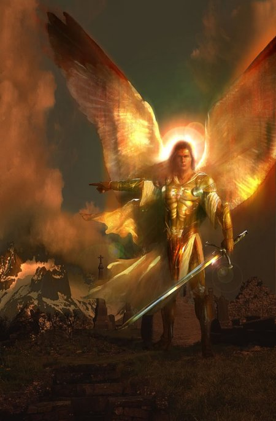

PREÂMBULO

São Miguel Arcanjo é sem dúvida, um admirável e amoroso “Espírito Celeste”, de extraordinária importância no contexto da espiritualidade cristã. Nas considerações acadêmicas, diversos teólogos incluindo São Jerônimo, Teodoreto e outros, o considera um membro do oitavo Coro da Hierarquia Angélica, enquanto outros teólogos como Francisco Toledo e Gabriel Vasquez, o fizeram “Príncipe Celeste” . Por outro lado, o teólogo Suarez e outros, acreditam ser mais provável que Miguel seja um “Serafim”, um Anjo pertencente à classe mais elevada da Hierarquia Angélica, um verdadeiro “Príncipe Serafim” denominado "ARCANJO" como se fosse um cognome carinhoso, porque inclusive o Arcanjo São Miguel é o “Guardião da Igreja”.
A Igreja nas suas Orações e no Ofício Litúrgico consagra a expressão “Arcanjo” para São Miguel. Mas, verdadeiramente, a teoria mais difundida entre os Padres, é que Miguel sendo o “Chefe do Exército Celeste” , por certo, deve pertencer a “Classe dos Serafim”, que é a mais elevada da Hierarquia dos Anjos.
Portanto, Miguel ocupa uma posição de liderança no plano Divino da criação. DEUS é o centro do Universo e ao redor DELE gravitam as criaturas, cada uma com sua órbita concêntrica ao redor do SENHOR, até aquelas mais distantes. Evidentemente Miguel pertence ao primeiro círculo concêntrico. Ele é o primeiro oficial da corte do Rei e está localizado diante do CRIADOR. Sua beleza tem tal semelhança com a de DEUS, que só é inferior a beleza e grandeza do VERBO ENCARNADO e da ONIPOTÊNCIA SUPLICANTE DA SANTÍSSIMA VIRGEM MARIA RAINHA DOS ANJOS, que por suas belezas autênticas, nenhum espírito a ELES pode ser comparado, porque são inferiores.
Dionísio o Aeropagita dizia sobre Miguel: "Ele é a imagem de DEUS, a manifestação da sua Luz oculta. Ele é o espelho do Altíssimo, espelho transparente, claro como o cristal, espelho fiel, sem alteração, sem mancha, um espelho que recolhe a inefável bondade e a radiante beleza da imagem Divina. Miguel está imediatamente subordinado à SANTÍSSIMA TRINDADE vivendo na mais próxima e íntima irradiação do Amor e de Luz incriada, sem intermediários, recebendo diretamente a ciência Divina, por isso aparece com inteligência brilhante, todo ardente de amor, todo radiante de poder. Ele ama a DEUS com toda a energia do seu ser, com todo o ardor de que é capaz. É Ele que, através da sua contemplação incessante, penetra com a maior profundidade possível a uma natureza criada, no conhecimento do SER Divino. A sua prodigiosa inteligência explora eternamente os segredos de DEUS. Ele é o Anjo para o qual são transparentes as leis da criação e os desígnios do CRIADOR”.
Este maravilhoso e admirável SÃO MIGUEL ARCANJO , por suas qualidades, virtudes e magníficos dons, nos estimulou a construir este Site. E manifestando a nossa devoção, em sua honra e como nossa humilde homenagem, vamos realçar aqui uma parcela infinitesimal da sua amorosa e impressionante obra, em benefício da humanidade de todas as gerações, a serviço do SENHOR DEUS CRIADOR.
APOSTOLADO DOS SAGRADOS CORAÇÕES
http://www.apostoladosagradoscoracoes.com/